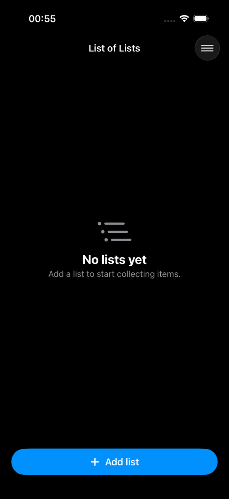
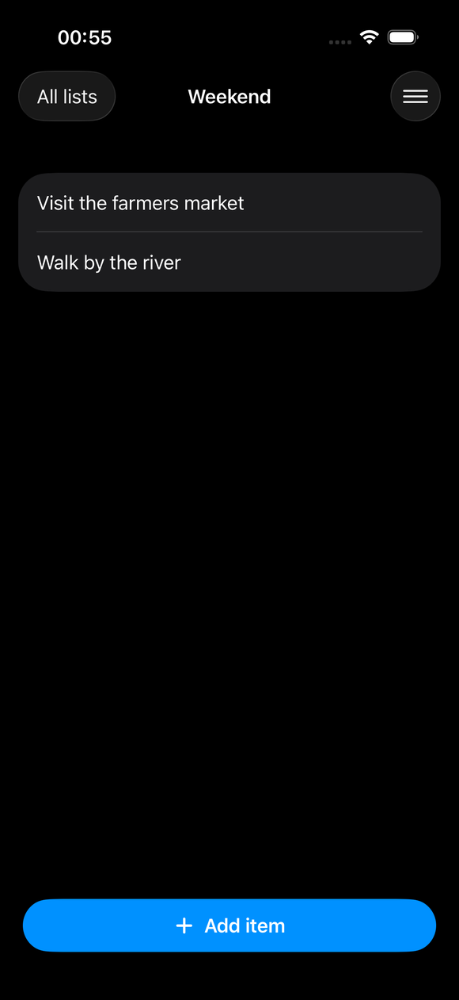
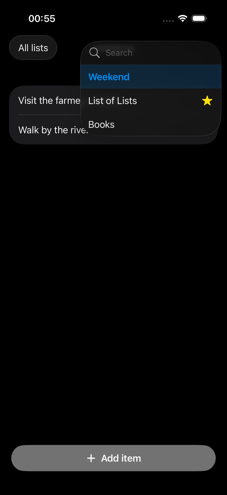
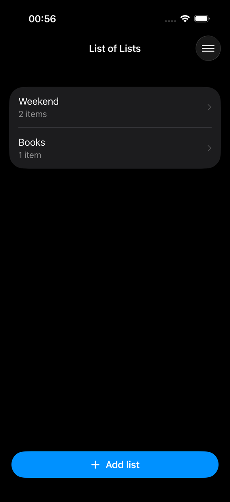

One directory, one page per list. Screens captured in the iPhone simulator.

Tap Add list, give it a name, and tap Add.

Open Weekend and tap Add item. Each title gets a row.

Tap the menu and choose Books. The star marks the directory.

Reopen the app. Both lists are in the directory, each with its own items.